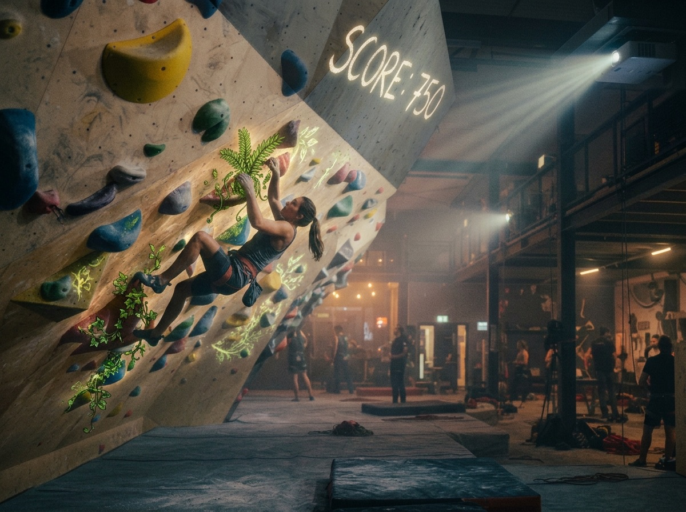

Project image

Idea
A small projected zone runs a game that reacts to the climber's body and hands. The system is fully autonomous: it detects climbers, starts a session, scores it and saves the result.
Game concept: Living Ink
Hands and feet emit flowing particles. Goals can be covering the zone, feeding a creature, keeping a flow alive or collecting orbs by touching specific holds.
The climb becomes a painting
At the end, a QR code downloads the artwork and a video of the session.
Results online
Leaderboard and web gallery for members, shareable on social media.
Seasonal modes
New game modes pushed remotely to keep the content fresh.
Audience
Regular members, beginners and kids, social media users, the gym's marketing team
Length
Continuous operation over weeks or months. Development takes 4–8 weeks, then low-touch maintenance.
Tech stack
- Short-throw laser projector (4–6k lumens) on a fixed mount, which reduces climbers' shadows
- 1–2 depth or RGB cameras, with infrared if gym lighting varies
- Small PC in a ventilated case with auto-start, watchdog and remote monitoring
- Small cloud backend for sessions, QR links, leaderboard and gallery
Budget
| Projector (purchase, or lease) | €2k–4.5k |
| Dedicated PC, cameras, mounts, cabling | €1.5k–3k |
| Content, development, backend | €3.5k–8k |
| Annual upkeep (hosting, maintenance) | €0.4k–0.8k |
| Total | €7k–16k |
| Pilot version: 4–6 weeks, rented projector | €3k–6k |
Launch partner pricing for the first projects. Equipment rental is billed at cost. Final quote after the wall dimensions and venue check.
Risks
- Heat and dust over months: needs a sealed housing
- Climber shadows: mitigated by the short-throw lens
- GDPR: only skeletons are processed, photos are saved only on explicit user action
- Content fatigue: rotate seasonal modes
Value
- Marketing reach through QR codes and shares
- Member retention
- A “wow” feature the gym can sell
- Buying usually beats long-term rental after about 8 months; lease or revenue share is also possible